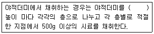
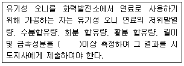

폐기물처리산업기사 (2012-09-15 기출문제)
1과목: 폐기물개론
1. 폐기물발생량의 예측방법 중 모든 인자를 시간에 대한 함수로 나타낸 후 시간에 대한 함수로 표현된 각 영향인자들 간의 상관관계를 수식화 하는 방법은?
- 시간수지법
- 경향법
- 다중회귀모델
- 동적모사모델
(정답률: 85%)

2. 폐기물을 파쇄하여 매립할 때 유리한 내용으로 틀린 것은?
- 매립작업이 용이하고 압축장비가 없어도 매립작업만으로 고밀도 매립이 가능하다.
- 곱게 파쇄하면 매립시 복토가 필요없거나 복토요구량을 줄일 수 있다.
- 폐기물 입자의 표면적이 증가되어 미생물작용이 촉진되므로 매립시 조기 안정화를 꾀할 수 있다.
- 폐기물 밀도가 높아져 혐기성 조건을 신속히 조성할 수 있어 냄새가 방지된다.
(정답률: 85%)
3. 폐기물 파쇄시 적용하는 힘과 가장 거리가 먼 것은?
- 충격력
- 압축력
- 인장력
- 전단력
(정답률: 93%)
4. 쓰레기 발생량 조사방법 중 물질수지법에 관한 설명으로 틀린 것은?
- 주로 산업폐기물 발생량을 추산할 때 이용된다.
- 먼저 조사하고자 하는 계의 경계를 정확하게 설정한다.
- 물질수지를 세울 수 있는 상세한 데이터가 있는 경우에 가능하다.
- 모든 인자를 수식화하여 비교적 정확하며 비용이 저렴하다.
(정답률: 93%)
5. 쓰레기를 압축시키기 전의 밀도가 0.43t/m3이었던 것을 압축기에 압축시킨 결과 밀도가 0.93t/m3 으로 증가하였다면 이때 압축비는?
- 약 1.52
- 약 1.87
- 약 2.16
- 약 2.54
(정답률: 87%)
6. 폐기물발생량이 2000m3/일, 밀도 840kg/m3일 때, 5톤 트럭으로 운반하려면 1일 필요한 차량수는? (단, 예비차량 2대 포함, 기타 조건은 고려하지 않음)
- 334대
- 336대
- 338대
- 340대
(정답률: 80%)
7. 쓰레기 발생량 및 성상 변동에 관한 내용으로 틀린 것은?
- 일반적으로 도시규모가 커질수록 쓰레기의 발생량이 증가한다.
- 대체로 생활수준이 증가하면 쓰레기 발생량도 증가한다.
- 일반적으로 수집빈도가 낮을수록 쓰레기 발생량이 증가한다.
- 일반적으로 쓰레기통의 크기가 클수록 쓰레기 발생량이 증가한다.
(정답률: 94%)
8. 어떤 쓰레기의 입도를 분석하였더니 입도누적곡선상의 10%(D10), 30%(D30), 60%(D60), 90%(D90)의 입경이 각각 2, 6, 15, 25mm 이라면 곡률계수는?
- 15
- 7.5
- 2.0
- 1.2
(정답률: 93%)
9. 쓰레기 발생량 조사방법으로 적절하지 않은 것은?
- 물질수지법(material balance method)
- 적재차량 계수분석법(load count analysis)
- 수거트럭 수지법(collection truck balace method)
- 직접계근법(direct weighting method)
(정답률: 89%)
10. 수소 15.0%, 수분 0.4%인 중유의 고위 발열량이 12,000 kcal/kg일 때, 저위발열량은?
- 11,188 Kcal/kg
- 11,253 Kcal/kg
- 11,324 Kcal/kg
- 11,496 Kcal/kg
(정답률: 88%)
11. 수거노선 설정시 유의사항으로 적절치 않는 것은?
- 고지대에서 저지대로 차량은 운행한다.
- 다량 발생되는 배출원은 하루 중 가장 나중에 수거한다.
- 반복운행, U자 회전을 피한다.
- 가능한 한 시계방향으로 수거노선을 정한다.
(정답률: 93%)
12. 적환장에 대한 다음 설명 중 틀린 것은?
- 적환장은 폐기물 처분지가 멀리 위치할수록 필요성이 더 높다.
- 고밀도 거주지역이 존재할수록 적환장의 필요성이 더 높다.
- 공기를 이용한 관로수송시스템 방식을 이용할수록 적환장의 필요성이 더 높다.
- 작은 용량의 수집차량을 사용할수록 적환장의 필요성이 더 높다.
(정답률: 93%)
13. 인구가 6,000,000명이 사는 어느 도시에서 1년에 3,000,000 ton의 폐기물이 발생된다. 이 폐기물을 4,500명의 인부가 수거할 때 MHT는? (단, 수거인부의 1일 작업시간은 8시간이고, 1년 작업일수는 300일이다)
- 2.3
- 3.6
- 4.7
- 8.8
(정답률: 65%)
14. 500세대 2500명이 생활하는 아파트에서 배출되는 쓰레기를 4일마다 수거하는데 적재용량 8.0m3의 트럭 5대가 소요된다. 쓰레기의 용적당 중량은 400kg/m3이라면 1인1일당 쓰레기 배출량은?
- 1.2kg/manㆍday
- 1.6kg/manㆍday
- 2.1kg/manㆍday
- 2.8kg/manㆍday
(정답률: 65%)
15. 함슈율이 각각 90%, 70%인 하수슬러지를 무게비 3:1로 혼합하였다면 혼합 하수 슬러지의 함수율은 몇 %인가? (단, 하수 슬러지 비중은 1.0)
- 81
- 83
- 85
- 87
(정답률: 59%)
16. 수거대상인구 5,252,000명, 쓰레기 수거량 4,412,000톤/년일 때 쓰레기 1인1일 발생량은?
- 1.8kg/인ㆍ일
- 2.kg/인ㆍ일
- 2.7kg/인ㆍ일
- 3.2kg/인ㆍ일
(정답률: 55%)
17. 무게 100톤, 밀도 700kgm3 인 폐기물을 밀도 1200kg/m3 로 압축 하였다면 부피 감소율(%)은?
- 41.7%
- 45.5%
- 51.3%
- 53.8%
(정답률: 69%)
18. 수분함량이 90%인 슬러지 100m3을 30m3으로 농축하였다면 농축된 슬러지 함수율은? (단, 슬러지의 비중 1.0)
- 약 56%
- 약 67%
- 약 73%
- 약 82%
(정답률: 69%)
19. 물렁거리는 가벼운 물질로부터 딱딱한 물질을 선별하는데 이용되며, 경사진 컨베이어를 통해 폐기물을 주입시켜 회전하는 드럼 위에 떨어뜨려 분류하는 선별 방식은?
- Stoners
- Jigs
- Secators
- float Separator
(정답률: 86%)
20. 쓰레기 수송 방법 중 Pioeline 수송에 관한 설명으로 틀린 것은?
- 가설 후에도 경로변경이 용이하다.
- 쓰레기 발생밀도가 높은 곳에서 현실성이 있다.
- 수거차량에 의한 도심지 교통량 증가가 없다.
- 대형폐기물의 경우 압축 또는 파쇄를 하여야 한다.
(정답률: 87%)
2과목: 폐기물처리기술
21. 인공 복토재의 조건과 가장 거리가 먼 것은?
- 투수계수가 높아야 한다.
- 연소가 잘 되지 않아야 한다.
- 생분해가 가능하여야 한다.
- 살포가 용이해야 한다.
(정답률: 75%)
22. 탄소 85%, 수소 13%, 황 2%로 조성된 중유의 연소에 필요한 이론공기량은?
- 9.1 Sm3/kg
- 11.1 Sm3/kg
- 13.1 Sm3/kg
- 15.1 Sm3/kg
(정답률: 62%)
23. 매립후 경과기간에 따른 가스 구선선분의 변화단계 중 CH4와 CO2의 함량이 거의 일정한 정상상태의 단계로 가장 적절한 것은?
- Ⅰ단계 - 호기성단계(초기조절단계)
- Ⅱ단계 - 혐기성단계(전이단계)
- Ⅲ단계 - 혐기성단계(산형성단계)
- Ⅳ단계 - 혐기성단계(메탄발효단계)
(정답률: 79%)
24. 프로판(C3H8) 5 Sm3의 연소에 필요한 이론공기량은?
- 94 Sm3
- 106 Sm3
- 119 Sm3
- 124 Sm3
(정답률: 58%)
25. K 도시의 인구가 10,000명이고 분뇨발생량은 1.1ℓ/인ㆍ일이며 수거율은 60%이다. 이 수거분뇨를 혐기성 소화조호 처리할 때 필요한 소화조의 용량은? (단, 소화조는 크기가 같은 4조로 하며, 소화일수는 30일이다.)
- 약 30m3/조
- 약 50m3/조
- 약 70m3/조
- 약 90m3/조
(정답률: 85%)
26. 유동층 소각로의 장점이라 할 수 없는 것은?
- 기계적 구동부분이 적어 고장율이 낮다.
- 가스의 온도가 낮고 과잉공기량이 적다.
- 로내의 온도의 자동제어와 열회수가 용이하다.
- 열용량이 커서 파쇄 등 전처리가 필요 없다.
(정답률: 92%)
27. 쓰레기를 소각 처리하고자 한다. 중량분율로 탄소성분이 11%, 수소 3%, 산소 13%이고, 기타성분(불연소분)이 73%일 때 소각로에 공급해야 할 실제 공기량은? (단, 공기 과잉 계수 m = 1.5)
- 약 1.5 Nm3/kg
- 약 2.0 Nm3/kg
- 약 2.5 Nm3/kg
- 약 3.0 Nm3/kg
(정답률: 63%)
28. 전기집진장치의 장점이 아닌 것은?
- 집진효율이 높다.
- 설치 시 소요 부지면젃이 적다.
- 운전비, 유지비가 적게 소요된다.
- 압력손실이 적고 대향의 분진함유가스를 처리할 수 있다.
(정답률: 75%)
29. CO 10kg을 완전 연소시킬 때 필요한 이론적 산소량은?
- 4 Sm3
- 6 Sm3
- 8 Sm3
- 10 Sm3
(정답률: 53%)
30. 1차 반응속도에서 반감기(농도가 50% 줄어드는 시간)가 10분이다. 초기농도의 75%가 줄어드는데 걸리는 시간은?
- 30분
- 25분
- 20분
- 15분
(정답률: 60%)
31. 분뇨를 혐기성 소화 처리할 때 발생하는 CH4 gas의 부피는 분뇨투입량의 약 8배라고 한다. 1일에 분뇨 600KL씩을 처리하는 소화시설에서 발생하는 CH4 가스를 에너지원으로하여 24시간 균등 연소시킬 때 얻을 수 있응 시간당 열량은? (단, CH4가스의 발열량은 6000 kcal/m3)
- 1.0×105kcal/hr
- 1.2×106kcal/hr
- 1.6×107kcal/hr
- 1.8×108kcal/hr
(정답률: 75%)
32. 물리학적으로 분류된 토양수분인 흡습수에 관한 내용으로 틀린 것은?
- 중력수 외부에 표면장력과 중력이 평형을 유지하며 존재하는 물을 말한다.
- 흡습수는 pF 4.5 이상으로 강하게 흡착되어 있다.
- 식물이 직접 이용할 수 없다.
- 부식토에서의 흡습수의 양은 무게비로 70%에 달한다.
(정답률: 63%)
33. 유효공극율 0.2, 점토층 위의 침출수 수두 1.5m인 점토차수층 1.0m를 통과하는데 10년이 걸렸다면 점토 차수층의 투수계수는 몇 cm/sec 인가?
- 1.54×10-8
- 2.54×10-8
- 3.54×10-8
- 5.54×10-8
(정답률: 65%)
34. 인구 200,000명인 어느 도시에 매립지를 조성하고자 한다. 1인 1일 쓰레기 발생ㄹ향은 1.3kg이고 쓰레기 밀도는 0.5t/m3이며 이 쓰레기를 압축하면 그 용적이 2/3로 줄어든다. 압축한 쓰레기를 매립할 경우 년간 필요한 매립면적은? (단, 매립지 깊이는 2m, 기타 조건은 고려하지 않은)
- 약 42500 m2
- 약 51800 m2
- 약 63300 m2
- 약 76200 m2
(정답률: 70%)
35. 공기를 이용하여 일산화탄소를 완전 연소시킬 때 건조가스 중 최대 탄산가스량은? (단, 표준상태 기준)
- 21.6%
- 27.7%
- 31.2%
- 34.7%
(정답률: 40%)
36. 어느 도시의 분뇨 농도는 TS가 6%이고, TS의 5%가 VS이다. 이 분뇨를 혐기성소화처리를 한다면 분뇨 10m3당 발생하는 CH4가스의 양은? (단, 비중은 1.0으로 가정, 분뇨의 VS 1kg당 0.4m3의 CH4가스 발생)
- 122m3
- 131m3
- 142m3
- 156m3
(정답률: 34%)
37. 가로 1.2m, 세로 2.0m, 높이 12m의 연소실에서 저위 발열량 10,000 kcal/kg의 중유률 1시간에 100kg 연소한다면 연소실 열발생률(kcal/m3ㆍh)은?
- 약 20000
- 약 25000
- 약 30000
- 약 35000
(정답률: 57%)
38. 시멘트 고형화법 중 시멘트 기초법에 관한 설명으로 틀린 것은?
- 다양한 폐기물을 처리할 수 있다.
- 폐기물의 건조 또는 탈수가 필요하다.
- 고형화된 시료의 표면적/부피 비를 감소시키거나 투수성을 감소시키는 것이 중요하다.
- 사용되는 시멘트의 양을 조절함으로써 폐기물 콘크리트의 강도를 높일 수 있다.
(정답률: 89%)
39. 폐기물 열분해에 관한 다음 설명으로 틀린 것은?
- 폐기물을 산소의 공급 없이 가열하여 가스, 액체, 고체의 3성분으로 분리한다.
- 고도의 발열반응으로 폐열회수가 가능하다.
- 고온 열분해에서 1700℃까지 온도를 올리면 생산되는 모든 재는 slag로 배출된다.
- 열분해에서 일반적으로 저온이라 함은 500~900℃, 고온은 1,100~1,500℃를 말한다.
(정답률: 70%)
40. 합성차수막 중 CR의 장단점으로 틀린 것은?
- 대부분의 화학물질에 대한 저항성이 높다.
- 마모 및 기계적 충격에 강하다.
- 접합이 용이하다.
- 가격이 비싸다.
(정답률: 69%)
3과목: 폐기물 공정시험 기준(방법)
41. 수은을 원자흡수분광광도법으로 측정할 때 벤젠, 아세톤 등 휘발성 유기물질의 간섭을 제어하기 위해 사용하는 시약은?
- 과망간산칼륨
- 염산히드록실 아민
- 티오황산나트륨
- 묽은 황상
(정답률: 72%)
42. 시안을 자외선/가시선 분광법으로 측정할 때 클로라민-T와 피리딘ㆍ피라졸론 혼합액을 넣어 나타나는 색으로 옳은 것은?
- 적색
- 황갈색
- 적자색
- 청색
(정답률: 67%)
43. 폐기물 소각시설의 소각재 시료채취에 관한 내용이다. ()안에 옳은 내용은? (단, 연속식 연소방식의 소각재 반출 설비에서 시료채취)

- 0.5m
- 1.0m
- 1.5m
- 2.0m
(정답률: 53%)
44. 다음의 용출시험방법에 관한 내용 중 옳은 것은?
- 시료용액은 시료의 조제방법에 따라 조제한 시료 100g 이상을 정확히 달아 정제수에 염산을 넣어 pH 4.5~5.8으로 한 용매(mℓ)를 시료:용매=1:10(W:W)의 비로 1L 플라스크에 넣어 혼합한다.
- 시료용액을 상온, 상압에서 진탕회수가 매 분당 약 200회, 진폭이 4~5cm의 진탕기를 사용하여 6시간 연속 진탕한 다음 0.1μm의 유리섬유여과지로 여과한 것을 용출시험용 시료용액으로 한다.
- 여과가 어려운 경우에는 원심분리기를 사용하여 분당 3,000회전 이상으로 20분 이상 원심 분리한 다음 상징액을 적당향 취하여 용출시험용 시료용액으로 한다.
- 시료중의 수분함량 보정을 위해 함수율 95%이상인 시료에 한하여 “5/(100-D)"를 곱하여 계산된 값으로 한다(여기서 D는 시료의 함수율(%)이다.)
(정답률: 48%)
45. 정량한계 산정식으로 옳은 것은?
- 정량한계 = 3.3 × 표준편차
- 정량한계 = 5 × 표준편차
- 정량한계 = 10 × 표준편차
- 정량한계 = 15 × 표준편차
(정답률: 69%)
46. 폐기물공정시험기준(방법)에 규정된 시료의 축소방법과 가장 거리가 먼 것은?
- 원추이분법
- 원추사분법
- 교호삽법
- 구획법
(정답률: 75%)
47. 기름성분(중량법)의 정량한계는? (단, 폐기물공정시험기준(방법) 기준)
- 0.⑤% 이하
- 0.1% 이하
- 0.3% 이하
- 0.5% 이하
(정답률: 73%)
48. 기체크로마토그래피로 비함침성 고상 폐기물 중 폴리클로리네이티드비페닐(PCBs)를 검사할 때 비함침성 고상폐기물의 정량한계(부재 채취법)는?
- 0.⑤mg/L
- 0.0⑤mg/L
- 0.01μg/10cm2
- 0.01μg/100cm2
(정답률: 62%)
49. 수소이온농도를 측정할 때 사용하는 표준액 중 pH 값이 가장 낮은 것은? (단. 0℃ 기준)
- 붕산염 표준액
- 인산염 표준액
- 프탈산염 표준액
- 수산염 표준액
(정답률: 63%)
50. 총착에 관한 설명으로 틀린 것은?
- 정밀히 단다 : 규정된 수치의 무게를 0.1mg 까지 다는 것을 말한다.
- 밀봉용기 : 취급 또는 저장하는 동안에 기체 또는 미생물이 침입하지 아니하도록 내용물을 보호하는 용기를 말한다.
- 방울수 : 20℃에서 정제수 20방울을 적하할 때 그 부피가 약 1mL 되는 것을 말한다.
- 시험조작 중 즉시 : 30초 이내에 표시된 조작을 하는 것을 뜻한다.
(정답률: 47%)
51. 다음 용어의 정의로 옳은 것은?
- 액상폐기물 : 고형물함량 5% 이하
- 반고상폐기물 : 고형물함량 5% 이상~10%이하
- 반고상폐기물 : 고형물함량 5% 이상~15%이하
- 고상폐기물 : 고형물함량 15% 이상
(정답률: 58%)
52. 고형물함량이 50%, 수분함량이 50%, 강열감량이 95%인 폐기물의 경우 폐기물의 고형물 중 유기물함량은?
- 60%
- 70%
- 80%
- 90%
(정답률: 31%)
53. 시료의 전처리를 위한 산분해법 중 유기물 함량이 비교적 높지 않고 금속의 수산화물, 산화물, 인산염 및 황화물을 함유하고 있는 시료에 적용하는 것은?
- 질산-황산 분해법
- 질산-염산 분해법
- 질산-과염소산 분해법
- 질산 분해법
(정답률: 59%)
54. pH=1인 폐산과 pH=5인 폐산의 수소이온농도 차이는 몇 배인가?
- 4배
- 4백배
- 만배
- 10만배
(정답률: 74%)
55. 기체크로마토그래피로 휘발성 저급염소화 탄화수소류를 측정할 때 간섭물질에 관한 내용으로 틀린 것은?
- 추출용매에는 분석성분의 머무름 시간에서 피크가 나타나는 간섭물질이 있을 수 있다.
- 디클로로메탄과 같이 머무름 시간이 긴 화합물은 용매나 용질의 피크와 겹쳐 분석을 방해할 수 있다.
- 플루오르화탄소나 디클로로메탄과 같은 휘발성 유기물은 보관이나 운반 중에 격막을 통해 시료 안으로 확산되어 시료를 오염시킬 수 있다.
- 시료에 혼합 표준액 일정량을 첨가하여 크로마토그램을 작성하고 미지의 다른 성분과 피크의 중복여부를 확인한다.
(정답률: 50%)
56. 5톤 이상의 운반차량에 적재된 폐기물은 평면상으로 몇 등분하여 시료를 채취하는가?
- 4등분
- 6등분
- 9등분
- 12등분
(정답률: 80%)
57. 자외선/가시선 분광법으로 6가크롬을 측정할 때 흡수셀 세척시 사용되는 시약과 가장 거리가 먼 것은?
- 탄산나트륨
- 질산
- 과망산간칼륨
- 에틸알코올
(정답률: 67%)
58. 자외선/가시선 분광법으로 구리를 측정할 때 황갈색 킬레이트 화합물을 추출하는 용액으로 가장 옳은 것은?
- 사염화탄소
- 아세트산부틸
- 클로로폼
- 아세톤
(정답률: 50%)
59. 기체크로마토그래피를 적용한 유기인 분석에 관한 내용으로 틀린 것은?
- 기체크로마토그래프로 분리한 다음 질소인 검출기로 분석한다.
- 기체크로마토그래프로 분리한 다음 불꽃광도 검출기로 분석한다.
- 정량한계는 사용하는 장치 및 측정조건에 따라 다르나 각 성분 당 0.00⑤mg/L이다.
- 시료채취는 유리병을 사용하며 염산으로 pH2 이하로 시료를 보전한다.
(정답률: 34%)
60. 채취대상 폐기물 양과 최소 시료수에 대한 내용으로 틀린 것은?
- 대상 폐기물양이 300톤이면, 최소 시료수는 30이다.
- 대상 폐기물양이 1000톤이면, 최소 시료수는 40이다.
- 대상 폐기물양이 2500톤이면, 최소 시료수는 50이다.
- 대상 폐기물양이 5000톤이면, 최소 시료수는 60이다.
(정답률: 80%)
4과목: 폐기물 관계 법규
61. 다음 중 폐기물처리업의 허가를 받을 수 없는 자에 대한 기준으로 틀린 것은?
- 미성년자
- 파산선고를 받고 복권된 날부터 2년이 지나지 아니한 자
- 폐기물처리업의 허가가 취소된 자로서 그 허가가 취소된 날부터 2년이 지나지 아니한 자
- 폐기물관리법을 위반하여 징역 이상의 형의 집행유예를 선고받고 그 집행유예 기간이 지나지 아니한 자
(정답률: 58%)
62. 주변지역에 대한 영향 조사를 하여야 하는 ‘대통령령으로 정하는 폐기물처리시설’ 기준으로 옳지 않은 것은? (단, 폐기물처리업자가 설치, 운영)
- 시멘트 소성로(폐기물을 연료로 사용하는 경우는 제외한다.)
- 매립면적 15만 제곱미터 이상의 사업장 일반폐기물 매립시설
- 매립면적 1만 제곱미터 이상의 사업장 지정폐기물 매립시설
- 1일 처리능력이 50톤 이상인 사업장폐기물 소각시설(같은 사업장에 여러 개의 소각시설이 있는 경우에는 각 소각시설의 1일 처리능력의 합계가 50톤 이상인 경우를 말한다.)
(정답률: 54%)
63. 환경부령으로 정하는 음식물류 폐기물(농, 수, 축산물류 폐기물을 포함한다.)배출자에 대한 기준으로 옳은 것은?
- 집단급식소(사회복지시설의 집단급식소는 제외)1일 최소 급식인원이 100명 이상인 집단급식소를 운영하는 자
- 집단급식소(사회복지시설의 집단급식소는 제외)1일 최소 급식인원이 200명 이상인 집단급식소를 운영하는 자
- 집단급식소(사회복지시설의 집단급식소는 제외)1일 평균 총 급식인원이 100명 이상인 집단급식소를 운영하는 자
- 집단급식소(사회복지시설의 집단급식소는 제외)1일 평균 총 급식인원이 200명 이상인 집단급식소를 운영하는 자
(정답률: 64%)
64. 폐기물 처리 공제조합에 관한 내용으로 틀린 것은?
- 조합은 해당 자치단체장에게 설립신고를 함으로써 성립된다.
- 조합은 조합원의 방치폐기물을 처리하기 위한 공제사업을 한다.
- 조합은 법인으로 한다.
- 조합의 조합원은 공제사업을 하는 데에 필요한 분당금을 조합에 내야 한다.
(정답률: 54%)
65. 사업장폐기물을 폐기물처리업자에게 위탁하여 처리하려는 사업장폐기물배출자는 환경부장관이 고시하는 폐기물 처리가격의 최저액보다 낮은 가격으로 폐기물 처리 처리를 위탁하여서는 아니 된다. 이를 위반하여 폐기물 처리 가격의 최저액보다 낮은 가격으로 폐기물 처리를 위탁한 자에 대한 과태료 부과 기준은?
- 1천만원 이하
- 5백만원 이하
- 3백만원 이하
- 2백만원 이하
(정답률: 31%)
66. 대통령령으로 정하는 폐기물처리시설을 설치, 운영하는 자는 그 처리시설에서 배출되는 오염물질을 측정하거나 환경부령으로 정하는 측정기관으로 하여금 측정하게 하고, 그 결과를 환경부 장관에게 보고하여야 한다. 다음 중 환경부령으로 정하는 측정기관과 가장 거리가 먼 것은?
- 수도권매립지관리공사
- 보건환경연구원
- 국립환경과학원
- 한국환경공단
(정답률: 47%)
67. 환경부령으로 정하는 폐기물처리시설의 설치를 마친 자는 환경부령으로 정하는 검사기관으로부터 검사를 받아야 한다. 폐기물처리시설이 멸균분쇄시설인 경우, 검사기관으로 옳지 않는 것은?
- 한국환경공단
- 보건환경연구원
- 한국산업기술시험원
- 한국기계연구원
(정답률: 47%)
68. 다음은 폐기물처리업자(폐기물 재활용업자)의 준수사항에 관한 내용이다. ()안에 옳은 내용은?

- 매 월 1회 이상
- 매 2월 1회 이상
- 매 분기 당 1회 이상
- 매 반기 당 1회 이상
(정답률: 71%)
69. 설치신고대상 폐기물처리시설 기준으로 옳은 것은?
- 생물학적 처분시설 또는 재활용시설로서 1일 처분능력 또는 재활용 능력이 5톤 미만인 시설
- 생물학적 처분시설 또는 재활용시설로서 1일 처분능력 또는 재활용 능력이 10톤 미만인 시설
- 생물학적 처분시설 또는 재활용시설로서 1일 처분능력 또는 재활용 능력이 50톤 미만인 시설
- 생물학적 처분시설 또는 재활용시설로서 1일 처분능력 또는 재활용 능력이 100톤 미만인 시설
(정답률: 74%)
70. 다음 중 위해의료폐기물인 손상성 폐기물과 가장 거리가 먼 것은?
- 봉합바늘
- 유리재질의 시험기구
- 한방침
- 수술용 칼날
(정답률: 75%)
71. 폐기물 처리시설 중 중간처분시설인 기계적 처분시설 기준으로 틀린 것은?
- 파쇄ㆍ분쇄시설(동력 10마력 이상인 시설로 한정한다.)
- 압축시설(동력 10마력 이상인 시설로 한정한다.)
- 절단시설(동력 10마력 이상인 시설로 한정한다.)
- 증발ㆍ농축시설
(정답률: 47%)
72. 폐기물처리업의 시설, 장비, 기술능력 기준 중 생활폐기물 또는 사업장생활폐기물을 수집, 운반하는 경우의 장비에 해당되지 않는 것은?
- 밀폐식 운반차량 1대 이상(적재능력합계 15세제곱미터이상)
- 운반용 압축차량 또는 압착차량 1대 이상
- 계량시설 1식 이상
- 기계식 상차장치가 부착된 차량 1대 이상(특별시, 광역시에 한하되, 광역시의 경우 군지역은 제외)
(정답률: 65%)
73. 관리형 매립시설에서 발생하는 침출수의 배출허용 기준 중 청정지역의 부유물질량에 대한 기준으로 옳은 것은?
- 20 mg/L
- 30 mg/L
- 40 mg/L
- 50 mg/L
(정답률: 57%)
74. 기술관리인을 두어야 할 폐기물처리시설 기준으로 옳은 것은?
- 용해로(폐기물에서 비철금속을 추출하는 경우는 제외한다.)로서 시간당 재활용능력이 200킬로그램 이상인 시설
- 용해로(폐기물에서 비철금속을 추출하는 경우는 제외한다.)로서 시간당 재활용능력이 600킬로그램이상인 시설
- 용해로(폐기물에서 비철금속을 추출하는 경우로 한정한다.)로서 시간당 재활용능력이 200킬로그램 이상인 시설
- 용해로(폐기물에서 비철금속을 추출하는 경우는 제외한다.)로서 시간당 재활용능력이 600킬로그램 이상인 시설
(정답률: 42%)
75. 폐기물처리시설 주변지역의 영향조사 기준 중 조사지점에 관한 내용으로 옳지 않은 것은?
- 토양 조사지점은 매립시설에 인접하여 토양오염이 우려되는 4개소 이상의 일정한 곳으로 한다.
- 악취 조사지점은 매립시설에 가장 인접한 주거지역에서 냄새가 가장 심한 곳으로 한다.
- 미세먼지와 다이옥신 조사지점은 해당 시설에 인접한 주거지역 중 3개소 이상 지역의 일정한 곳으로 한다.
- 지표수 조사지점은 해당 시설에 인접하여 폐수, 침출수 등이 흘러들거나 흘러들 것으로 우려되는 2개소 이상의 일정한 곳으로 한다.
(정답률: 28%)
76. 폐기물처리기본계획에 포함되어야 하는 사항과 가장 거리가 먼 것은?
- 폐기물처리시설의 설치 현황과 향후 설치 계획
- 폐기물의 감량화와 재활용 등 자원화에 관한 사항
- 폐기물 관리 여건 및 전망
- 재원의 확보 계획
(정답률: 59%)
77. 법에서 사용하는 용어의 뜻으로 옳지 않은 것은?
- 폐기물감량화시설 : 생산 공정에서 발생하는 폐기물의 양을 줄이고, 사업장 내 재활용을 통하여 폐기물 배출을 최소화 하는 시설로서 대통령령으로 정하는 시설을 말한다.
- 처분 : 폐기물의 소각, 중화, 파쇄, 고형화 등의 중간처분과 매립하거나 해역으로 배출하는 등의 최종처분을 말한다.
- 재활용 : 폐기물을 재사용, 재생이용할 수 있는 상태로 만드는 대통령령으로 정하는 활동을 말한다.
- 처리 : 폐기물의 수집, 운반, 보관, 재활용, 처분을 말한다.
(정답률: 54%)
78. 폐기물처리업의 업종 구분과 영업내용의 범위를 벗어나는 영업을 한 자에 대한 벌칙 기준은?
- 5백만원 이하의 벌금에 처한다.
- 1년 이하의 징역이나 5백만원 이하의 벌금에 처한다.
- 2년 이하의 징역이나 1천만원 이하의 벌금에 처한다.
- 33년 이하의 징역이나 2천만원 이하의 벌금에 처한다.
(정답률: 59%)
79. 폴리클로리네이티드비페닐 하유 폐기물의 지정폐기물 기준으로 옳은 것은?
- 액체상태의 것 : 1리터당 0.5밀리그램 이상 함유한 것으로 한정한다.
- 액체상태의 것 : 1리터당 1밀리그램 이상 함유한 것으로 한정한다.
- 액체상태의 것 : 1리터당 2밀리그램 이상 함유한 것으로 한정한다.
- 액체상태의 것 : 1리터당 5밀리그램 이상 함유한 것으로 한정한다.
(정답률: 48%)
80. 폐기물관리법에 적용되지 않는 물질에 관한 내용으로 틀린 것은?
- 원자력안전법에 따른 방사성물질과 이로 인하여 오염된 물질
- 용기에 들어 있지 아니한 기체상태의 물질
- 수질 및 수생태계 보전에 관한 법률에 따른 하수, 분뇨
- 군수품관리법에 따라 폐기되는 탄약
(정답률: 58%)
동적모사모델은 폐기물 발생량을 예측하기 위해 모든 인자를 시간에 대한 함수로 나타내고, 이를 시간에 대한 함수로 표현된 각 영향인자들 간의 상관관계를 수식화하는 방법입니다. 이 모델은 시간의 흐름에 따라 인자들의 변화를 고려하여 예측을 수행하므로, 시간에 따른 폐기물 발생량의 변화를 예측하는 데 높은 정확도를 보입니다. 따라서 이 방법이 폐기물 발생량 예측에 가장 적합한 방법입니다.